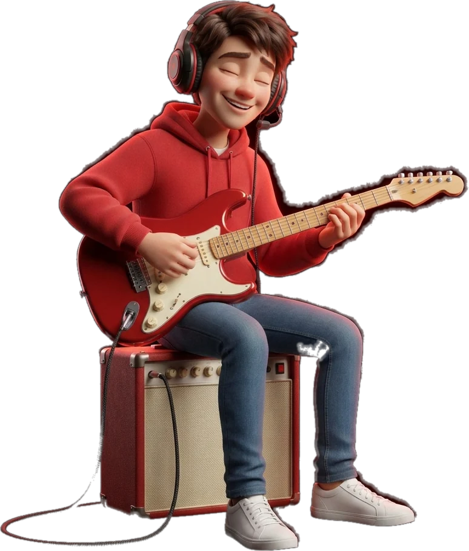
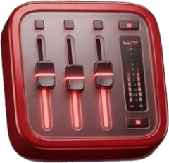
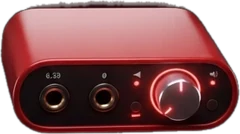
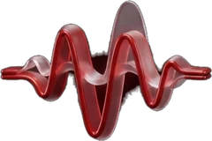
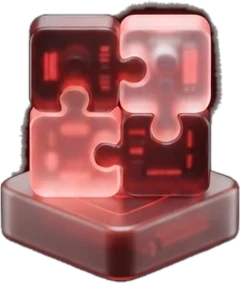

Trois étapes, zéro bricolage.
Discord n'accepte qu'un micro. L'app mixe ta carte son et ton casque, puis envoie le tout dans un micro virtuel.
Mixe
Choisis ta carte, ton micro et CABLE Input. Règle les volumes, clique sur Démarrer.
Joue
Dans Discord, micro : CABLE Output. Coupe Krisp pour garder le son de ta guitare.

Entends-toi jouer.
Choisis ce qui revient dans ton casque, sans toucher à ce que Discord reçoit.
Tu entends ta guitare en direct. Ta voix part sur Discord, pas dans ton casque.
Tout ce qu'il faut, rien de trop.

Mix guitare + voix
Gain, mute et noise gate par source. Limiteur doux en sortie.

Entrée 1 ou 2
Choisis le canal de ta carte son, ou les deux en mono.

44,1 ↔ 48 kHz
Rééchantillonnage et correction de dérive automatiques.

Plugins VST3
Neural DSP, TONEX, Fortin… sur ta guitare en direct, avec leurs fenêtres.
Avant de brancher.
Une autre question ? Ouvre une issue sur GitHub.
Créer un vrai micro dans Windows demande un pilote audio signé. VB-Cable en fournit un, gratuit. L'app joue ton mix dedans et Discord l'entend comme un micro.
Oui, en WASAPI, avec toutes les Focusrite, Scarlett, Audient ou MOTU. Pour l'ASIO, compile avec --features asio.
C'est la suppression du bruit (Krisp). Coupe-la dans Discord, avec l'annulation d'écho, et baisse le seuil d'activation vocale.
Vérifie que Windows n'« écoute » pas déjà ta carte son (Propriétés du micro › Écouter). Le retour de l'app suffit.
Les effets et amplis VST3 64 bits : Neural DSP, TONEX, Fortin, Darkglass… Chaque plugin est testé à part avant d'entrer dans la chaîne, pour qu'un plugin qui plante ne fasse pas tomber l'app. Les instruments ne sont pas pris en charge.
Tout ce qui accepte un micro : choisis CABLE Output comme entrée.